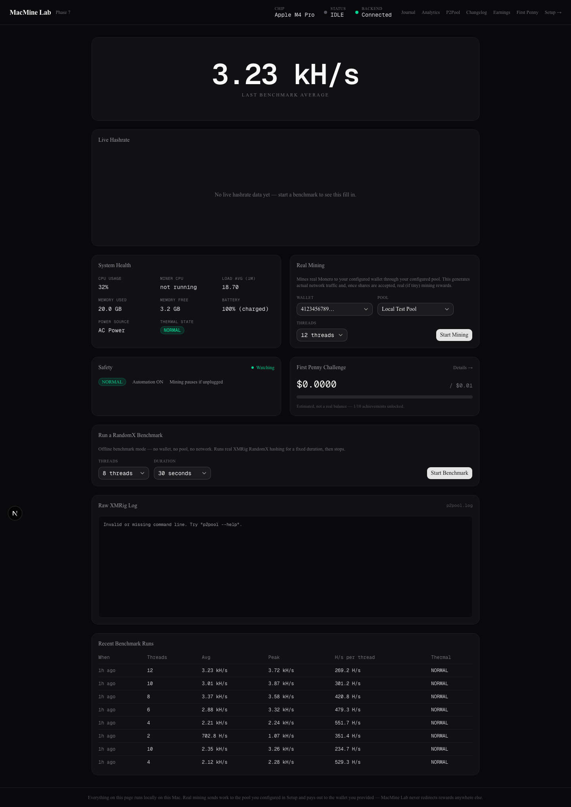
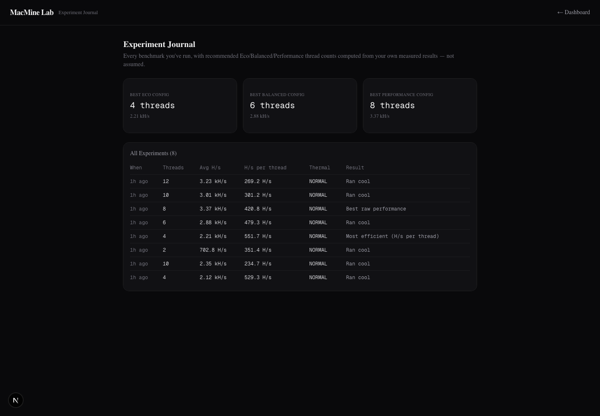
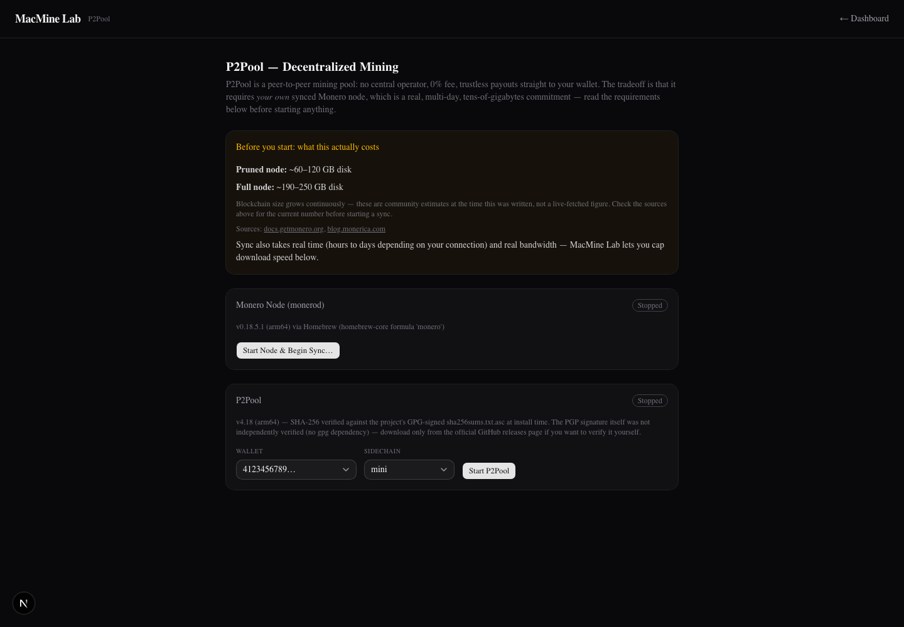

MacMine Lab is a local, transparent Monero (XMR) / RandomX mining laboratory for Apple Silicon Macs — real XMRig hashing, real pool and P2Pool mining, real thermal/battery safety automation, and real earnings estimates. If a measurement isn't available, it says Unavailable. It never invents one.
This is an educational tool for running real proof-of-work mining on your own Mac and understanding exactly what it's doing. It is emphatically not any of the things mining software usually gets confused for.
These are real screenshots of the local dashboard connected to a live backend on this machine — not mockups. This showcase page is static; the real dashboard only runs on your own Mac against your own local backend.

Dashboard — live hashrate, real system telemetry (CPU/memory/battery/thermal), real mining controls, and a live safety status panel, all wired to one WebSocket.

Experiment Journal — Eco/Balanced/Performance thread recommendations computed from your own measured benchmark runs, never assumed.

P2Pool setup — real, sourced storage estimates shown before any button that could start a multi-day, tens-of-gigabytes blockchain sync. Nothing this large ever starts automatically.
Each phase was built, run, tested against real hardware, and documented before moving to the next — see the full changelog for what was verified at every step.
Apple Silicon detection, XMRig install/verification via Homebrew, fully-offline RandomX benchmarking, thread calibration.
FastAPI bound to 127.0.0.1 only, SQLite persistence, a background telemetry sampler, a live WebSocket.
Next.js + TypeScript + Tailwind + shadcn/ui — live hashrate chart, system health, a real XMRig log terminal.
Wallet + pool configuration, a network-reachability connection test, live accepted/rejected shares.
Live XMR price and network difficulty, an electricity-cost calculator, achievement tracking with honest estimate labeling.
Thermal/battery automation with a hard critical-stop floor, real local notifications, an analytics page that refuses to fake a correlation.
Decentralized, 0%-fee mining via a locally-run monerod + P2Pool, with an explicit consent gate before any large download.
If a measurement isn't available, MacMine Lab says so — it never fabricates a hashrate, a temperature, an earnings figure, or a correlation.
Every binary (XMRig, monerod, P2Pool) is installed only from its official source, with a computed SHA-256 shown, not just claimed.
Estimated revenue, pool balance, and confirmed payout are three different, clearly-labeled things — never conflated.
Critical thermal state stops mining immediately and unconditionally — the one safety floor that can't be turned off.
The one action that can download 60–250+ GB (a Monero node sync) requires an explicit, restated-cost confirmation — never automatic.
Analytics charts say "not enough data yet" below two data points rather than drawing a line through one dot.
No seed phrase or private key is ever requested, stored, or transmitted — only a public receiving address.
Apple Silicon Mac, Homebrew installed. Everything else is handled for you.